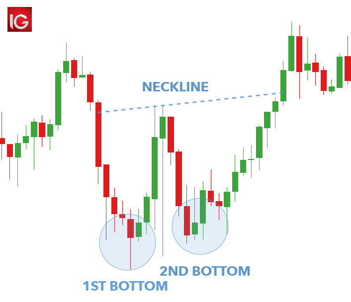

How to trade the double bottom pattern
The double bottom can be looked at as a letter W. After a downtrend has happened the candlesticks will hit a support and bounce off of it.
On this bounce it will hit a resistance before it bounces back down to the support that was previously created.

What is the psychology of a double bottom pattern?
The double bottom psychology is showing that price failed to make a lower low, but instead made a same low, which shows a loss of momentum. The loss
of momentum is showing the sellers are losing strength.
How to trade the double bottom and be profitable
1) The first way to trade the double bottom is directly trading at the previous low. With the previous support being fresh, your chances of
this trade working out in your favor are higher. Before just jumping into long trade you always want to look how it is approaching support. If the candlesticks
are big and momentum is heavy i wouldnt look to long on this support. I wouldnt look to long it because usually when momentum is heavy approaching a key level
the chances of it breaking are higher. After making sure it approaches support slowly, you can take a long trade. Taking profits at the neckline would be ideal.
If this neckline does not hold and it continues you can enter another long trade on the return to the neckline.
2)The second way you can look to trade the double bottom pattern is waiting on the chance of character. In the picture above it shows how the big bullish green candlesticks
slice right through the neckline indicating a change of character. When it does this is usually slowly returns back to the neckline to confirm if the change
of character was successful or not. When it gets back to the neckline this is when you would take your advantage of going long on this new formed support.